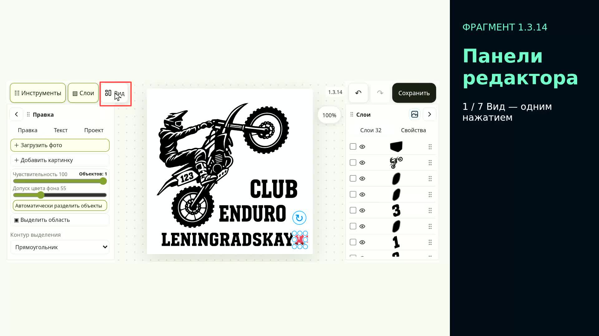

Открыть редакторФрагмент 1.3.14: прокрутка и порядок объектов
Объекты показаны миниатюрами без подписей «Объект…» по умолчанию. Панели занимают доступную высоту; настройки и слои прокручиваются пальцем или колесом мыши, без стрелок и счётчиков страниц.
- Нажимайте «Вид»: три раскладки меняются по кругу без окна.
- Прокрутите список слоёв и настройки до конца. Страница редактора остаётся на месте.
- Раскройте или поверните экран: панели используют новую высоту.
- Галочка переключает полную панель и значки. В стандартном расположении она остаётся на том же месте.
- Разделите надпись ещё раз: новые части идут слева направо. Своё имя можно задать карандашом, но это необязательно.

21 секунда · Silero Ксения · новые панели